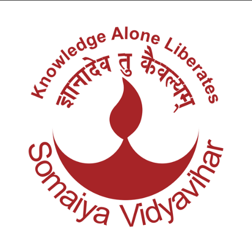

<style>
    footer {
      background-color: #00397a;
      color: white;
      padding-bottom: 0.5%;
      overflow: hidden;
      margin-top: 24px;
  }

  a.contact:hover {
      color: #fff;
      font-weight: bold;
  }

  footer a {
      color: white;
  }

  footer a:hover {
      color: white;
  }

  .footer-first-col {
      width: 30%;
      left: 0;
      text-align: center;
      display: flex;
      justify-content: center;
      align-items: center;
      flex-direction: column;
  }

  .footer-middle {
      font-size: 16px;
      width: 40%;
      text-align: center;
      line-height: 35px;
      width: 30%;
      text-align: center;
      display: inline-block;
      vertical-align: top;
      margin-top: 3%;
  }

  .footer-last-col {
      left: 0;
      text-align: center;
      display: flex;
      justify-content: center;
      align-items: center;
      flex-direction: column;
  }

  .footer-first-col img {
      width: 25%;
      border-radius: 8px;
      -webkit-box-shadow: 0px 0px 33px -3px rgba(0, 0, 0, 0.75);
      -moz-box-shadow: 0px 0px 33px -3px rgba(0, 0, 0, 0.75);
      box-shadow: 0px 0px 33px -3px rgba(0, 0, 0, 0.75);
  }

  .footer-last-col img {
      width: 25%;
      border-radius: 8px;
      margin-bottom: 8px;
      -webkit-box-shadow: 0px 0px 33px -3px rgba(0, 0, 0, 0.75);
      -moz-box-shadow: 0px 0px 33px -3px rgba(0, 0, 0, 0.75);
      box-shadow: 0px 0px 33px -3px rgba(0, 0, 0, 0.75);
  }


  a.social{
      padding: 2%;
      display: inline-block;
      transition: all;
      transition-duration: 0.5s;
      position: relative;
      text-decoration: none;
      transform: scale(1.4);
  }


  a.social:hover{
      transform: scale(1.15);
  }

  a.social:nth-child(1):hover {
      color: #3967ff;
  }

  a.social:nth-child(2):hover {
      color: #dd2a7b;
  }


  a.social:nth-child(3):hover {
      color: red;
  }

  a.social:nth-child(4):hover {
      color: #009dff;
  }
  a.social:nth-child(5):hover {
      color: #0e76a8;
  }


  footer a:hover {
      text-decoration: none;
  }
  .guide-developer{
      text-align: center;
  }
</style>


<footer id="footer" class="page-footer">
  <div class="row d-flex text-center justify-content-center mb-md-0 mb-4 p-4">
    <div class="footer-first-col col-md-4 p-4">
      
      <br>
      <br>
      <h6 class="py-2 px-4">
        <a href="https://kjsieit.somaiya.edu.in/en">K. J. Somaiya Institute of Engineering & Information Technology, Sion(East), Mumbai-4000 022</a>
      </h6>
      <a class="contact" href="tel:91-22-24061408">91-22-24061408</a><br>
      <a class="contact" href="tel:91-22-24061403">91-22-24061403</a><br>
      <a class="contact" href="mailto:info.tech@somaiya.edu">info.tech@somaiya.edu</a>
    </div>

    <div class="col-md-4 footer-middle">
      <div class="container">
        <br>
        <div class="socail-links mb-3 flex-center">
            <a class="social" href="https://www.facebook.com/kjsieitofficial"><i class="fab fa-facebook-f"></i></a>
            <a class="social" href="https://www.instagram.com/kjsieit_22/"><i class="fab fa-instagram"></i></a>
            <a class="social" href="https://twitter.com/kjsieit1"><i class="fab fa-youtube"></i></a>
            <a class="social" href="https://www.youtube.com/kjsieitofficial"><i class="fab fa-twitter"></i></a>
            <a class="social" href="https://www.linkedin.com/in/kjsieit/"><i class="fab fa-linkedin-in"></i></a>
        </div>
        <div class="prepared-by">
            <b>Prepared By</b>
            <br>
            <b>Department of Information Technology</b>
            <br>
            <b>2020-2021</b>

        </div>
        <!-- <div class="row pb-3">
          <div class="col-md-12">

          </div>
        </div> -->
      </div>
    </div>
    <div class="col-md-4 footer-last-col">
        
        <br>
        <a href="https://goo.gl/maps/SfT5E7aAy1r2kvvs6">
            <b>Somaiya Ayurvihar Complex,
            <br>
            Eastern Express Highway,
            <br>
            Near Everard Nagar, Sion(East),
            <br>
            Mumbai-4000 022
            </b>
            
        </a>
    </div>
  </div>
  <div class="guide-developer">
      <p>
          Developed By:
          <a href="https://www.linkedin.com/in/akash-yadav-b2b066170/">Akash Yadav,</a>
          <a href="">Dakshit Vaviya,</a>
          <a href="">Het Parekh,</a>
          <a href="">Harsh Vador,</a>
          <a href="">Tirth Shah</a>
      </p>
  </div>
  

  
</footer>